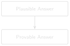

# code/chapter_10/traceable_answers.py
from dataclasses import dataclass
@dataclass
class Citation:
report: str
page: int | None = None
def format_evidence(citations: list[Citation]) -> str:
lines = [f" {c.report}" + (f" page {c.page}" if c.page else "") for c in citations]
return "Evidence:\n" + "\n".join(lines)10 Traceable Answers and Hallucination Mitigation

Progress ██████████░░ 10 / 12 · Estimated time: 60–75 min · Difficulty: 🔴 Advanced
10.1 Learning objectives
By the end of this chapter, you will be able to:
- Distinguish questions that should be answered by generation from questions that should be answered by structured data lookup.
- Attach a verifiable citation (report number, page, and date) to every claim a system produces.
- Detect and surface gaps in your own source archive, so the system’s silence about a period isn’t mistaken for “nothing happened.”
10.2 Operational Problem
Sean, the production engineer, asks a pointed question after seeing a generated number in a draft report: “Can you actually prove that number, or did the model just make it sound right?” Chapter 5 built a prompt that asks a language model to cite sources — necessary, but not sufficient. A model can still cite a plausible-sounding report number for a number it invented, especially for arithmetic questions (“how many hours of non-productive time in November?”) that language models are statistically bad at answering exactly, no matter how good the prompt is. Separately, this archive — like any real archive — has a genuine gap, and a system that answers confidently from what it has, without flagging what it’s missing, can quietly mislead an engineer who assumes silence means nothing happened.
10.3 Structured facts, already extracted
Language models can produce fluent, plausible claims that are simply false — a well-documented failure mode called hallucination (Ji et al. 2023).
TipEngineering Translation: Hallucination
A hallucination is a confident wrong answer — the language-model equivalent of a new hire who guesses a number rather than admitting “I don’t know,” and says it fluently enough that nobody thinks to double-check. It isn’t lying on purpose; it’s producing text that sounds right without anything underneath actually verifying it.
The single most effective mitigation in this book is a rule of thumb, not a model trick: if a question can be answered by looking something up or computing it from structured data, don’t generate the answer — compute it.
Every report in this archive has already been parsed into a real, structured ddr_facts.parquet table by the companion pipeline. Here’s an actual row from report #38 (2020-11-26):
NoteA real row from ddr_facts.parquet, report #38
report_date: 2020-11-26 wellbore: FORGE-16A-78-32
start_time: 06:00 end_time: 11:00
duration_hr: 5.0 phase: Production Drilling
op_code: Wire Line Logs is_npt: False
operation_text: "PJSM, pre job safety meeting. Rig up Schlumberger
run the UBI log from 5.200 to surface. Rig down
logging tools."A question like “how many hours did report #38 spend on wireline logging?” has an exact answer sitting in this table — duration_hr = 5.0 — computed once during extraction, not re-derived by a language model each time it’s asked. Generation is reserved for what it’s actually good at — narrative synthesis across multiple passages — and even then, every claim carries its source.
question
↓
answerable from structured data?
↓
yes -> query ddr_facts.parquet
-> exact, re-derivable answer
↓
no -> retrieve + generate (Ch.5)
-> answer + citations
(verify before trusting)10.4 A real, honest gap in this archive
The second mitigation is corpus-completeness awareness. This archive has a genuine one: the last Drilling report is #76, dated 2021-01-03. The Completion report (a DFIT — Diagnostic Fracture Injection Test) is dated 2021-01-06. Two calendar days — January 4th and 5th — have no report of any kind. Every other day in the drilling programme, from spud on October 30, 2020 through report #76, has exactly one report, so this gap is real and specific to the Drilling-to-Completion handover, not an artefact of messy source data.
A RAG system only knows what’s in its index. If you ask it “what happened on January 5th, 2021?” without gap-awareness, a poorly built system might either hallucinate an answer or simply retrieve the nearest chunks (report #76 or the Completion report) without ever telling you neither actually covers that date. Detecting the gap is a matter of checking the sequence of report numbers and dates for holes — not the content, just the presence.
10.5 Implementation
10.5.1 Step 1: give every claim a checkable tag
10.6 What problem are we solving?
Attach a checkable source to every claim — which report, which page — instead of a citation-shaped sentence a reader has to take on faith.
10.7 Inputs
- A report name/number, and an optional page number.
- A list of such citations to attach to one answer.
10.8 Expected Output
A plain-text “Evidence:” block listing each source, ready to show alongside a generated answer.
10.9 What just happened?
Citation bundles a report and a page number together as one unit — the equivalent of an evidence tag on an exhibit, so a claim’s source can never get separated from the claim itself by accident. format_evidence turns a list of those tags into a plain block of text a reader can check against the real reports, one line per source.
TipEngineering Translation: Dataclass
A dataclass like Citation is a small, labelled bundle of related facts — the code equivalent of an equipment tag that keeps a part number and its location together on one card, instead of as two separate loose numbers you could mix up.
10.9.1 Step 2: check the archive for real gaps
10.10 What problem are we solving?
Detect whether the archive has days with no report at all, so the system can say “I have nothing for that date” instead of guessing or silently retrieving the nearest available report.
10.11 Inputs
- A list of report dates, as ISO date strings, covering a period that should have one report per day.
10.12 Expected Output
A list of (start, end) date ranges with no report — empty if the archive is complete.
def find_date_gaps(report_dates: list[str]) -> list[tuple[str, str]]:
"""Return (start, end) date ranges with no report, given a sorted
list of ISO date strings covering a continuous daily-reporting period."""
from datetime import date, timedelta
dates = sorted(date.fromisoformat(d) for d in report_dates)
gaps = []
for prev, curr in zip(dates, dates[1:]):
missing_days = (curr - prev).days - 1
if missing_days > 0:
gaps.append(((prev + timedelta(days=1)).isoformat(), (curr - timedelta(days=1)).isoformat()))
return gaps10.13 What just happened?
The dates get sorted, then checked one consecutive pair at a time: if more than one day passes between two reports, everything in between gets recorded as a missing range. No content is inspected here at all — this only checks whether a report exists for each day, which is exactly enough to catch the real two-day gap in this archive.
10.13.1 Step 3: build a citation from a real search, not by hand
10.14 What problem are we solving?
Every Citation shown so far in this chapter was typed in by hand — Citation(report="...", page=1) — which proves the data structure works but not that the system can produce one. A citation is only actually trustworthy if it comes from the same retrieval the answer itself used. This step closes that loop: run a real query against Chapter 8’s chunk-level index, and read the report, page, and date straight off whichever chunk matched — never re-typed, never assumed.
10.15 Inputs
- Chapter 8’s
build_chunk_metadata_index()andsearch(). - A query string.
10.16 Expected Output
A list of Citation objects built entirely from the search results — real reports, real pages, real dates, in ranked order.
@dataclass
class Citation:
report: str
page: int | None = None
report_date: str | None = None # "report_date": date is the stdlib class
def citations_from_search(chunk_results: list[tuple[int, float]],
metadata: list[dict]) -> list[Citation]:
return [Citation(report=metadata[idx]["report"], page=metadata[idx]["page"],
report_date=metadata[idx].get("date"))
for idx, _score in chunk_results]10.17 What just happened?
For every (row_index, score) pair a search returns, this looks up metadata[row_index] — the real report, page, and date Chapter 8 recorded for that exact chunk — and wraps it in a Citation. There’s no separate “figure out the source” step: the metadata was attached back when the chunk was indexed, so reading it is all citing requires. The field is named report_date, not date — date is already the name of the standard library class this file imports below for find_date_gaps, and shadowing it would be its own quiet bug waiting to happen.
Run this against the real archive for "stuck pipe" and the top result is:
Evidence:
FORGE-16A-78-32_Drilling_038_2020-11-26.txt page 1 (2020-11-26)That’s the same report #38 this whole book has used for the stuck-pipe story, cited automatically from a live search — not because the example was written to come out that way, but because Chapter 8 already verified report #38 ranks 1st for this exact query against the real chunk-level index. Every DDR in this sample archive is a single page, so page reads 1 every time here; the code doesn’t know that in advance, and would report page 4 just as readily on a report that actually had one, which is the entire point of building it this way instead of typing page=1 by hand. The date, unlike the page, isn’t a Chapter 7 invention at all — it was always sitting in the filename; this step is the first place anything actually reads it.
10.18 Production Reality
This chapter’s citation and gap-detection code both assume the underlying extraction is trustworthy — but structured extraction is still code, written by someone, and can encode a judgment call worth checking (see this chapter’s own Field Notes on is_npt below). A deployed system has more to plan for:
- gap detection has to run continuously as new reports arrive, not just once at setup — a system that only checked for gaps on day one won’t notice a new one appearing three months later
- not every gap is administrative silence — a missing day could mean a missing safety report, which is worth escalating to a person, not just logging quietly as “no data for this date”
- a citation is only useful if someone actually reads it — a system that buries the evidence list at the bottom of a long answer, in small print, earns the same blind trust as a system with no citations at all
- some engineering decisions (regulatory submissions, incident reports) require a human sign-off no matter how good the system’s citations are — traceability supports a human reviewer, it doesn’t replace one
10.19 Practical exercise
🟢 Beginner
Try it yourself: Run find_date_gaps() against the report dates in this book’s ten-report sample — ["2020-10-22", "2020-11-07", "2020-11-24", "2020-11-25", "2020-11-26", "2020-11-27", "2020-12-06", "2020-12-07", "2020-12-08", "2021-01-06"].
You’ll know it worked when: the function reports several gaps — most of them simply reflecting that Part I’s curated subset skips most of the archive’s days on purpose. Then run it against the full 76-report archive’s dates (datasets/forge_archive/) and confirm it finds exactly one real gap: January 4th–5th, 2021, right before the Completion report.
10.20 Field notes
Warning🔧 Field notes: verify the automatic label, not just the automatic lookup
Action: check the real, computed is_npt flag — set once during extraction, not re-derived on every query — for every operations row on report #38, the stuck-pipe day.
Result: out of ten rows covering the full 24 hours, exactly one is flagged is_npt = True:
23:30-04:00 is_npt=True "Drill From 6,360' to 6,507'... During the
slide lost tool face and became assembly
became stuck"
04:00-06:00 is_npt=False "Work pipe, circulate lube sweep, work tool
back in position, Pipe free"Why: the classifier flagged the 4.5-hour block where the pipe became stuck, but not the following 2-hour block where the crew actually recovered it. That’s a defensible reading — the drilling operation is what got interrupted — but it’s also a real judgment call: an engineer asking “how many hours did this stuck-pipe event cost?” would probably expect all 6.5 hours counted, not 4.5.
Lesson: a structured field being automatically extracted doesn’t mean it’s automatically correct for your question. Trusting ddr_facts.parquet blindly here would silently undercount the incident by 2 hours, every time someone asks. The fix isn’t to distrust structured data — Chapter 10’s whole argument is that it beats generation — it’s to read the classification logic once, understand exactly what it counts, and know the edge it sits on before you build a report or a chart on top of it.
10.21 Challenge exercise
🟠 Intermediate
Challenge: Extend find_date_gaps() to classify each gap’s severity (e.g. a gap under 3 days is Low; a gap that crosses a report-type boundary — Drilling to Completion, as this one does — is High regardless of length, since it likely represents an unrecorded operational transition). A reference solution is in code/chapter_10/challenge/.
10.22 Key takeaways
- Prefer structured lookup over generation whenever the question is answerable from data you already extracted — it’s exact, not just plausible.
- Every generated claim needs a citation an engineer can independently check, not just a citation-shaped sentence.
- A citation is only as trustworthy as where its fields come from — a hand-typed
page=1proves the data structure works, not that the system can produce one. Chapters 7-10 wire the real value through: Chapter 1’s page markers, Chapter 7’s per-page chunking, Chapter 8’s chunk metadata, read back here. Not every field needs that much plumbing, though — the report date was sitting in the filename the whole time; the work there was reading it, not producing it. - A system that can tell you what it doesn’t have is more trustworthy than one that answers fluently regardless of coverage — this archive’s real two-day gap at the Drilling-to-Completion handover is exactly the kind of silence worth surfacing explicitly, not filling in.
10.23 Repository files
| File | Purpose |
|---|---|
code/chapter_10/traceable_answers.py |
Citation formatting, real search-to-citation wiring, and date-gap detection |
DDR_UTAH_FORGE/data/processed/qc/raw_pdf_missing_reports.csv |
Real, computed gap-detection output (companion repo) |
CautionCHECKPOINT — Chapter 10
Tip✓ WHAT YOU BUILT
traceable_answers.py — a citation and gap-detection layer: every claim carries a real, live-search-sourced citation — report, page, and date, never hand-typed — and every silence in the archive gets surfaced instead of hidden.
10.24 What can you do now that you couldn’t do before?
You can tell the difference between a question you should compute from data you already have and one you should generate an answer to — and you can prove, with a citation built from a real search result (not typed in by hand), exactly where every part of a generated answer came from, including telling an engineer honestly when the archive simply has nothing to say.
10.25 Suggested next step
Coming up in Chapter 11: You now have a system that retrieves well and answers honestly. Chapter 11 asks the question every system like this eventually needs answered with numbers, not impressions: how good is it, really — and where specifically does it still fail?